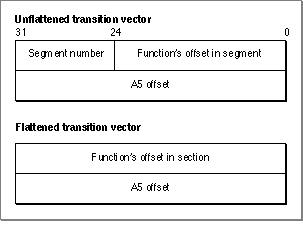
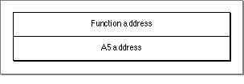

Legacy Document
Important: The information in this document is obsolete and should not be used for new development.
Important: The information in this document is obsolete and should not be used for new development.


Transition Vector Conversion
As with the jump table entries, MakeFlat converts the transition vector addressing scheme from one that is segment oriented to one that is code section oriented. MakeFlat generates a relocation instruction for each transition vector that adds the section's address and A5 address to the offset in each transition vector. Figure 9-7 shows a transition vector before and after conversion (flattening).Figure 9-7 A transition vector before and after flattening

Note that the function offset in the unflattened transition vector is a word offset, and the A5 offset is a byte offset. In a flattened transition vector, MakeFlat has converted the function's word offset into a byte offset.
At runtime, the transition vector offset values are replaced with absolute addresses, as shown in Figure 9-8.
Figure 9-8 A transition vector at runtime
